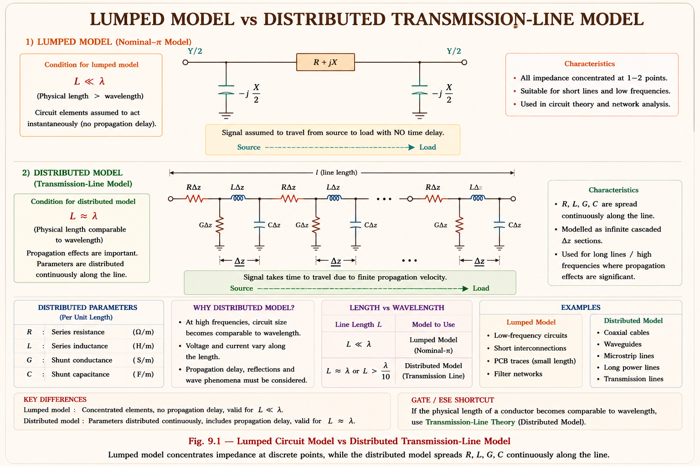
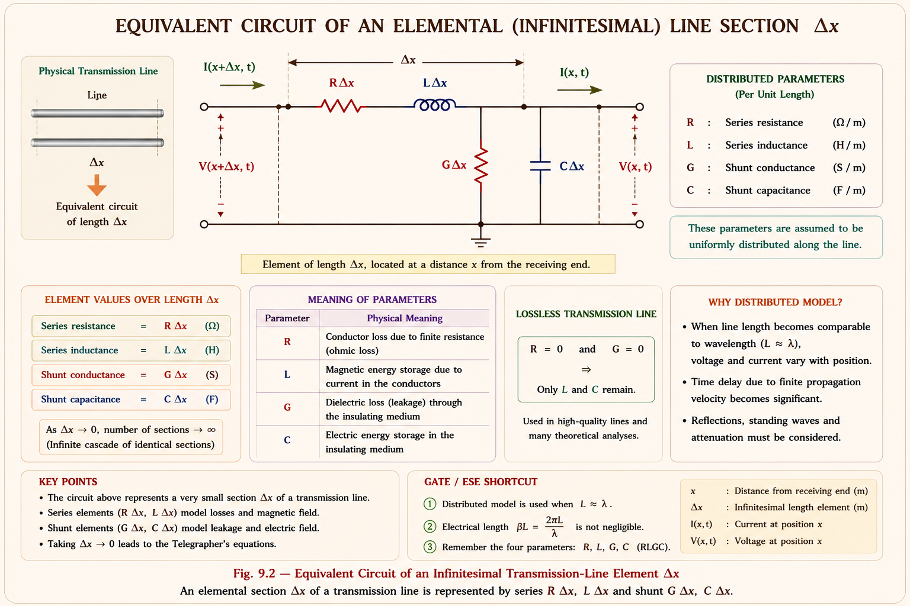
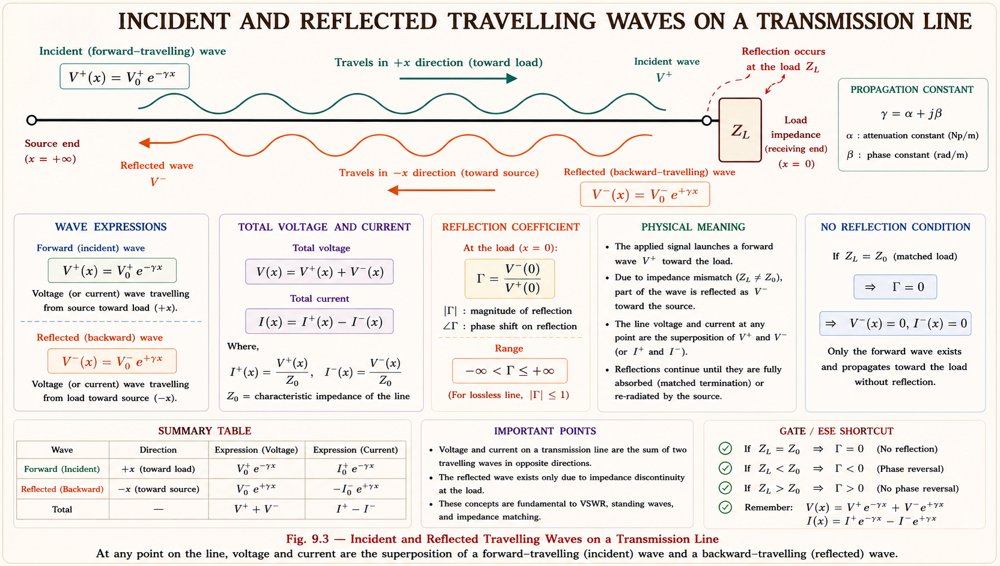
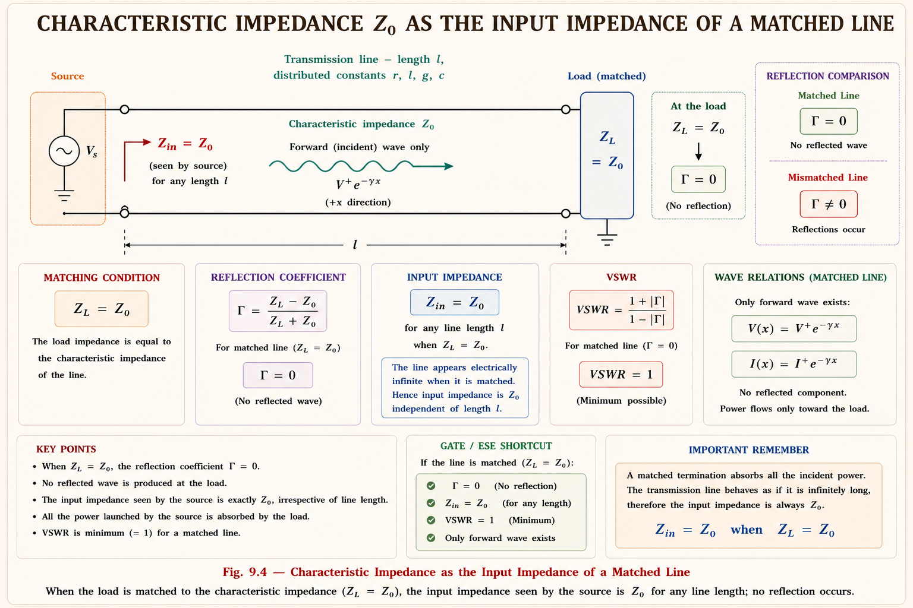

Distributed parameters, Telegrapher's equations, the lossless line, the distortionless line, and characteristic impedance — the complete field-theory foundation for long-line analysis, built up from first principles with full derivations and GATE/IES-focused solved examples.
Every transmission line analysis you have done so far — short line, nominal-π, nominal-T — quietly made one assumption: that resistance, inductance, and capacitance can be lumped into a handful of discrete elements and placed at fixed points along the line. For a 100 km line this is a convenient approximation. But physically, a transmission line is not a circuit made of three or four components — it is a continuous conductor, and every infinitesimal length of it possesses its own resistance, inductance, capacitance, and leakage conductance.
This chapter builds the line from the ground up as a distributed-parameter system: a cascade of infinite, infinitesimally small circuit elements. From this physical picture we derive the Telegrapher's Equations — a pair of coupled partial differential equations that describe how voltage and current vary simultaneously with distance along the line and with time. Solving them reveals that voltage and current do not appear instantaneously everywhere on the line; they travel as waves, launched at the source and arriving at the receiving end after a finite propagation delay.
A lumped model is only valid when the physical length of the line is small compared with the wavelength of the signal travelling on it. At power frequency (50 Hz), the wavelength is about 6000 km, so lines under roughly 250 km can be treated as lumped (medium-line nominal-π / nominal-T). Beyond that — and always for lines carrying high-frequency transients, switching surges, or lightning waves — the distributed model is mandatory.

The four primary line constants — series resistance \(r\) (Ω/km), series inductance \(l\) (H/km), shunt capacitance \(c\) (F/km), and shunt conductance \(g\) (S/km, due to leakage and corona) — are defined per unit length. They are uniformly distributed; no point on the line is "more resistive" or "more capacitive" than any other.
Consider a long transmission line carrying sinusoidal voltage and current at frequency \(f\). Take a small element of the line of length \(\Delta x\), located at distance \(x\) from the receiving end. Because \(\Delta x\) is infinitesimally small, the element behaves exactly like a lumped π-section, but unlike the medium-line nominal-π model, here we let \(\Delta x \to 0\) and stack infinitely many such sections to represent the whole line exactly.

| Symbol | Name | Unit (per km) | Physical Origin |
|---|---|---|---|
| r | Series resistance | Ω/km | Conductor metal resistivity, skin effect |
| l | Series inductance | H/km | Magnetic flux linkage of the conductor loop |
| g | Shunt conductance | S/km | Leakage through insulators, corona discharge |
| c | Shunt capacitance | F/km | Electric field between conductor and earth/return path |
Lower-case \(r\), \(l\), \(g\), \(c\) denote per-unit-length constants (Ω/km, H/km, S/km, F/km). Upper-case \(R\), \(L\), \(G\), \(C\) — used in the short/medium-line chapters — denote the total lumped values for the whole line (\(R = r \times \text{length}\), etc.). Mixing these up is one of the most frequent GATE numerical errors in this topic.
Apply Kirchhoff's Voltage Law (KVL) and Kirchhoff's Current Law (KCL) to the elemental section of length \(\Delta x\) shown above. Let \(V(x,t)\) and \(I(x,t)\) be the instantaneous voltage and current at distance \(x\) from the receiving end.
The voltage drop across the series \(r\Delta x\) and \(l\Delta x\), as we move from \((x + \Delta x)\) to \(x\), equals the difference \(V(x+\Delta x, t) - V(x,t)\):
Divide throughout by \(\Delta x\):
As \(\Delta x \to 0\), the left side is by definition the partial derivative of \(V\) with respect to \(x\):
The negative sign appears because \(V\) decreases as \(x\) increases away from the source toward the receiving end (voltage falls in the direction of current flow due to the series drop).
The current entering the shunt branch (\(g\Delta x\) in parallel with \(c\Delta x\)) equals the difference between the current entering and leaving the element, \(I(x+\Delta x, t) - I(x,t)\). This current splits between the leakage conductance and the capacitive charging current:
Dividing by \(\Delta x\) and letting \(\Delta x \to 0\):
These two first-order partial differential equations completely describe voltage and current on a uniform transmission line. They are called the Telegrapher's Equations because they were first derived by Oliver Heaviside in the 1880s to analyse signal distortion on long telegraph cables — the same mathematics governs power lines, telephone lines, and RF transmission lines alike.
For power-system analysis we are almost always interested in steady-state sinusoidal operation at a single frequency \(\omega = 2\pi f\). Replacing the time derivatives \(\partial/\partial t\) with \(j\omega\) (standard phasor substitution) converts the PDEs into ordinary differential equations in \(x\) alone, with \(V(x)\) and \(I(x)\) now complex phasors:
Here \(z = r + j\omega l\) is the series impedance per unit length, and \(y = g + j\omega c\) is the shunt admittance per unit length — both complex quantities. This compact pair is the form used in every subsequent derivation in this chapter.
If \(g = 0\) and \(r = 0\) (ideal lossless conductor with perfect insulation): the equations reduce to \(-\frac{dV}{dx} = j\omega l \cdot I\) and \(-\frac{dI}{dx} = j\omega c \cdot V\) — pure reactive coupling, leading directly to the lossless-line case in Section 9.5. If \(l = c = 0\) (no stored-energy elements): the equations degenerate to simple Ohm's-law type relations with no wave behaviour at all — confirming that wave propagation is fundamentally a consequence of energy storage in \(L\) and \(C\).
The two first-order phasor equations are coupled — \(V\) depends on \(I\) and \(I\) depends on \(V\). To solve them, we decouple by differentiating one and substituting the other.
Differentiate the voltage equation with respect to x:
Substitute \(dI/dx = -yV\) from the second telegrapher's equation:
By an identical procedure (differentiate the current equation, substitute \(dV/dx = -zI\)):
Both \(V(x)\) and \(I(x)\) satisfy the same second-order linear ODE, where:
\(\gamma\) is the propagation constant, a complex number whose real part \(\alpha\) is the attenuation constant (Np/km, governing amplitude decay) and imaginary part \(\beta\) is the phase constant (rad/km, governing the phase shift per unit length). Both are derived in detail in Section 9.8.
The general solution to \(d^2V/dx^2 = \gamma^2 V(x)\) is a sum of two exponential terms:
Differentiating \(V(x)\) and using \(-dV/dx = zI(x)\) gives the corresponding current solution:
where \(Z_0 = \sqrt{z/y}\) is the characteristic impedance, derived fully in Section 9.7. The constants \(A_1\) and \(A_2\) are evaluated from the boundary conditions at the receiving end (\(x = 0\)): \(V(0) = V_R\) and \(I(0) = I_R\), giving:
This is the single most important conceptual result of the chapter. The term \(A_1 e^{\gamma x}\) represents a wave travelling in the \(-x\) direction (from receiving end back toward the source) — called the reflected or backward-travelling wave. The term \(A_2 e^{-\gamma x}\) represents a wave travelling in the \(+x\) direction (from source toward the receiving end) — the incident or forward-travelling wave. The voltage and current anywhere on the line is the superposition of these two travelling waves.

If the line is terminated in a load exactly equal to \(Z_0\), \(A_1 = 0\) — there is no reflected wave, and the entire incident wave is absorbed by the load. This is the principle behind impedance-matched terminations in surge arresters, communication lines, and the analysis of travelling-wave reflections from open or short-circuited line ends during lightning and switching studies.
A lossless line is an idealisation in which the series resistance and shunt conductance are both taken as zero: \(r = 0\) and \(g = 0\). No real transmission line is perfectly lossless, but well-designed EHV lines with large-diameter, low-resistance conductors and excellent insulation approach this condition closely enough that the lossless model gives highly accurate engineering results — and, crucially, it makes the mathematics far simpler.
Setting \(r = 0\) and \(g = 0\) in \(Z_0 = \sqrt{z/y} = \sqrt{\frac{r + j\omega l}{g + j\omega c}}\):
For a lossless line, \(Z_0 = \sqrt{l/c}\) is a pure real number — it has no reactive component at all, even though the line itself is made entirely of inductors and capacitors. This is one of the most surprising and frequently tested results in this topic.
Similarly, \(\gamma = \sqrt{zy} = \sqrt{(j\omega l)(j\omega c)} = j\omega\sqrt{lc}\):
Since \(\alpha = 0\), a wave travelling along a lossless line suffers no attenuation — its amplitude remains constant with distance; only its phase changes (governed by \(\beta\)). This matches physical intuition: with no resistance to dissipate energy and no leakage conductance to bleed it away, the wave's energy is perfectly conserved as it propagates.
The phase velocity (speed at which a constant-phase point on the wave travels) is:
For an overhead line in air, \(l\) and \(c\) are determined entirely by the line geometry (conductor radius and spacing) and the permeability/permittivity of free space. Working through the standard inductance and capacitance formulas, the product \(l \cdot c\) for any overhead line reduces to \(1/c^2\), where \(c\) here is the speed of light — so \(v_p \approx 3 \times 10^8 \text{ m/s}\), essentially the speed of light, regardless of conductor size or spacing. For underground cables, where the dielectric has relative permittivity \(\varepsilon_r > 1\), the velocity is reduced to \(v_p = c/\sqrt{\varepsilon_r}\).
Wider conductor spacing increases \(l\) (more flux linkage) but simultaneously decreases \(c\) (weaker electric field coupling) by almost the same proportion. The product \(l \cdot c\) — and therefore \(v_p\) — stays essentially constant. This is why overhead power lines, telephone lines, and radio transmission lines in air all propagate signals at nearly the same speed: that of light.
At power frequency \(f = 50 \text{ Hz}\), the wavelength \(\lambda = v_p/f\) works out to about 6000 km — vastly longer than any practical transmission line, which is why lumped-parameter (short/medium line) models remain acceptable approximations for lines well under this length, as noted in Section 9.1.
A practical line always has some resistance and leakage — it cannot be perfectly lossless. But a signal carrying multiple frequency components (such as a voice signal on a telephone line, or a transient on a power line) will be distorted if different frequency components attenuate or travel at different speeds. A distortionless line is one where the attenuation constant \(\alpha\) and velocity of propagation \(v_p\) are both independent of frequency — every frequency component is attenuated equally and delayed equally, so the output is simply a scaled, delayed replica of the input with no waveform distortion.
This condition was discovered by Oliver Heaviside while investigating why long telegraph and telephone cables badly distorted signals. His finding led directly to the practice of deliberately adding "loading coils" along telephone lines to satisfy the distortionless condition — a major advance in early long-distance communication engineering.
Start from the general propagation constant:
Factor out \(l\) and \(c\) from each bracket:
If we impose the condition \(r/l = g/c\), both bracketed terms become identical, \((r/l + j\omega)\), and the square root simplifies beautifully:
Under this condition:
Comparing with \(\gamma = \alpha + j\beta\):
Both \(\alpha\) and \(v_p\) are independent of frequency \(\omega\). Every frequency component of a complex waveform is attenuated by exactly the same factor and delayed by exactly the same time per unit length, so the waveform shape is preserved — only its overall amplitude shrinks and it is time-shifted. This is the defining property of "no distortion."
Under the same condition, \(Z_0\) also simplifies to a constant, frequency-independent, purely real value:
| Property | Lossless Line | Distortionless Line |
|---|---|---|
| Defining condition | \(r = 0, g = 0\) | \(r/l = g/c\) (\(rc = lg\)) |
| Attenuation \(\alpha\) | Zero | Non-zero, but frequency-independent |
| Energy loss | None | Present, but uniform across frequencies |
| Velocity \(v_p\) | \(1/\sqrt{lc}\), constant | \(1/\sqrt{lc}\), constant |
| Characteristic impedance \(Z_0\) | \(\sqrt{l/c}\), real | \(\sqrt{l/c}\), real |
| Waveform fidelity | Perfect (no loss at all) | Perfect shape (but amplitude reduced) |
| Practical realisability | Idealised approximation | Achieved via loading coils (added \(l\)) |
Students often assume "distortionless" means "lossless." It does not. A distortionless line still attenuates the signal (\(\alpha \neq 0\) in general) — it just attenuates every frequency equally, so the shape is preserved even though the size shrinks. Every lossless line automatically satisfies \(rc = lg\) trivially (since \(r = g = 0\)), so a lossless line is always distortionless, but a distortionless line need not be lossless.
Real telephone cables have \(r/l \gg g/c\) (resistance dominates, leakage is tiny), so the distortionless condition is naturally violated. Engineers historically corrected this by inserting loading coils — additional series inductance — at regular intervals to raise the effective \(l\) until \(r/l \approx g/c\) is satisfied, restoring distortionless transmission without needing to physically reduce the cable's resistance.
Characteristic impedance is the single most important parameter of a distributed-parameter line. It appeared naturally in Section 9.4 as the proportionality constant relating the travelling voltage wave to its associated travelling current wave. This section examines its physical meaning and general formula in depth.
\(Z_0\) is, in general, a complex number with both magnitude and phase angle, because \(z\) and \(y\) are themselves complex. It carries units of ohms, just like an ordinary impedance, but its physical meaning is entirely different from a lumped circuit impedance.
The defining physical property of \(Z_0\) is this: if you connect an infinitely long line (or, equivalently, a finite line correctly terminated in a load equal to \(Z_0\)) to a source, the impedance the source "sees" looking into the line is exactly \(Z_0\) — regardless of the line's actual length. This is why \(Z_0\) is also called the surge impedance of the line.

It is easy to mistakenly think of \(Z_0\) as some kind of fixed resistance built into the conductor. It is not. \(Z_0\) depends only on the distributed \(r\), \(l\), \(g\), \(c\) per unit length and on frequency — not on the physical length of the line at all. A 50 km line and a 500 km line built with identical conductor geometry and spacing have exactly the same \(Z_0\).
For practical overhead EHV transmission lines, treating the line as approximately lossless (\(r\), \(g\) small), typical surge impedance values are:
| Line Type | Typical \(Z_0\) |
|---|---|
| Single-circuit overhead EHV line | 350 – 450 Ω |
| Bundled-conductor EHV line | 250 – 300 Ω |
| Underground cable | 30 – 60 Ω |
\(Z_0 = \sqrt{l/c}\). Cables have conductors very close together (small spacing) with a high-permittivity dielectric in between — this drastically increases \(c\) while only modestly affecting \(l\), so \(Z_0\) for a cable is far smaller than for an overhead line of the same voltage class.
The power delivered when a line is terminated in a purely resistive load equal to \(Z_0\) is called the Surge Impedance Loading, \(\text{SIL} = V^2/Z_0\) (for a 3-phase line, with \(V\) as line-to-line voltage). SIL is used as a benchmark for natural loading: when a line carries exactly its SIL, the reactive power generated by its capacitance exactly balances the reactive power absorbed by its series inductance, and the voltage profile along the line is perfectly flat. This connects directly back to the Ferranti effect and voltage-profile discussions from Chapter 8.
The propagation constant \(\gamma = \sqrt{zy} = \alpha + j\beta\) was introduced in Section 9.4 as the quantity governing how a travelling wave's amplitude and phase change with distance. This section examines \(\alpha\) and \(\beta\) — its real and imaginary parts — individually, in the general (lossy) case.
\(\alpha\) (units: Np/km, neper per km) governs how rapidly the amplitude of the travelling wave decays with distance. For a wave \(V(x) = V_0 e^{-\gamma x}\) travelling in the \(+x\) direction:
The wave amplitude falls off exponentially. \(\alpha\) arises physically from real power dissipation — \(I^2 r\) heating loss in the series resistance and leakage loss \(V^2 g\) in the shunt conductance. A larger \(\alpha\) means more loss per unit length, so the line dissipates more of the transmitted power as heat before it reaches the far end.
\(\alpha\) is conventionally expressed in nepers per unit length (Np/km), not decibels. 1 Np = 8.686 dB. GATE numericals occasionally ask for conversion between the two — always check which unit the question expects in the final answer.
\(\beta\) (units: rad/km) governs how rapidly the phase of the travelling wave changes with distance. It directly determines two practically important quantities already introduced for the lossless case and equally applicable here:
Method 1 — Direct complex algebra: Multiply out \((r + j\omega l)(g + j\omega c)\), express the result in polar form \(M\angle\theta\), take the square root (giving magnitude \(\sqrt{M}\) and angle \(\theta/2\)), and finally read off the real and imaginary parts as \(\alpha\) and \(\beta\) respectively.
Method 2 — Squaring approach (faster for hand calculation): Since \(\gamma^2 = (\alpha + j\beta)^2 =\) \((\alpha^2 - \beta^2) + j(2\alpha\beta)\), equate real and imaginary parts with \(zy = (rg - \omega^2 lc) + j\omega(rc + lg)\):
These two simultaneous equations can be solved for \(\alpha\) and \(\beta\) given numerical values of \(r\), \(l\), \(g\), \(c\), \(\omega\) — the standard approach for GATE-level numerical problems where a fully symbolic answer is not required.
| Case | \(\alpha\) | \(\beta\) |
|---|---|---|
| General lossy line | \(\text{Re}\{\sqrt{(r+j\omega l)(g+j\omega c)}\}\) — frequency-dependent | \(\text{Im}\{\sqrt{(r+j\omega l)(g+j\omega c)}\}\) — frequency-dependent (non-linear with \(\omega\)) |
| Lossless (\(r = g = 0\)) | 0 | \(\omega\sqrt{lc}\) — linear with \(\omega\) |
| Distortionless (\(rc = lg\)) | \(r\sqrt{c/l}\) — independent of \(\omega\) | \(\omega\sqrt{lc}\) — linear with \(\omega\) |
In both the lossless and the distortionless special cases, \(\beta = \omega\sqrt{lc}\) — exactly linear in frequency. This is precisely what makes \(v_p = \omega/\beta\) a constant in both cases. It is only in the fully general lossy case (no special condition on \(r, l, g, c\)) that \(\beta\) becomes a more complicated, non-linear function of \(\omega\), which is what causes phase-velocity (and hence waveform) distortion on an ordinary lossy line.
Given: \(r = 0.1 \;\Omega\text{/km}\), \(l = 1.2 \times 10^{-3} \text{ H/km}\), \(g = 0.6 \times 10^{-6} \text{ S/km}\), \(c = 0.009 \times\) \(10^{-6} \text{ F/km}\), \(f = 50 \text{ Hz}\), \(\omega = 2\pi \times 50 = 314.16 \text{ rad/s}\)
(i) Series impedance \(z\):
(ii) Shunt admittance \(y\):
(iii) Approximate \(Z_0\) (lossless approximation, since \(r \ll \omega l\) and \(g \ll \omega c\) here):
Since \(\omega l\) (\(0.377\)) \(\gg r\) (\(0.1\)) and \(\omega c\) (\(2.83 \;\mu\text{S}\)) \(\gg g\) (\(0.6 \;\mu\text{S}\)), the line behaves very nearly like a lossless line, and \(Z_0 \approx \sqrt{l/c}\) is an excellent approximation — this shortcut is valid for almost every practical EHV overhead-line numerical at power frequency.
Given: \(l = 1.3 \times 10^{-3} \text{ H/km}\), \(c = 0.0085 \times 10^{-6} \text{ F/km}\), \(f = 50 \text{ Hz}\)
(i) Velocity of propagation:
(ii) Wavelength:
As established in Section 9.5, the velocity for any overhead line in air comes out to essentially the speed of light, independent of the actual \(l\) and \(c\) values, because the product \(lc\) is fixed by the permeability and permittivity of free space.
Given: \(r = 10 \;\Omega\text{/km}\), \(l = 4 \times 10^{-3} \text{ H/km}\), \(g = 5 \times 10^{-5} \text{ S/km}\), \(c = 0.05 \times 10^{-6}\) \(\text{ F/km}\)
Step 1 — Check \(r/l\) vs \(g/c\):
Since \(r/l \neq g/c\) (\(2500 \neq 1000\)), the cable as given is not distortionless.
Step 2 — Required \(l\) for the distortionless condition (\(rc = lg\)):
The loading coils must raise the series inductance from \(4 \text{ mH/km}\) to \(10 \text{ mH/km}\) — an increase of \(6\) \(\text{ mH/km}\) — to satisfy \(r/l = g/c\) and restore distortionless transmission.
Reducing cable resistance \(r\) would require a larger, more expensive conductor over the entire cable run. Adding discrete loading coils at intervals to raise the effective \(l\) is far cheaper and is the historically preferred engineering solution — exactly as practised on early long-distance telephone cables.
Common Student Mistakes 🟢 High Probability
For a lossless transmission line with per-unit-length inductance \(l\) and capacitance \(c\), the characteristic impedance \(Z_0\) is:
Explanation: \(Z_0 = \sqrt{z/y} = \sqrt{(j\omega l)/(j\omega c)} = \sqrt{l/c}\), since the \(j\omega\) terms cancel exactly. The result is real and frequency-independent — and, importantly, independent of the line's physical length.
A transmission line with series resistance \(r\), series inductance \(l\), shunt conductance \(g\), and shunt capacitance \(c\) (all per unit length) is distortionless when:
Explanation: \(r/l = g/c\) (equivalently \(rc = lg\)) is Heaviside's condition. Option (A) describes the lossless line, which is a special case that always satisfies the distortionless condition — but is not the general condition itself.
The velocity of propagation of a wave on a lossless overhead transmission line in air is approximately:
Explanation: \(v_p = 1/\sqrt{lc}\). For any overhead line in air, the product \(lc\) reduces to \(1/c^2\) (\(c =\) speed of light) regardless of geometry, since wider spacing raises \(l\) and lowers \(c\) by compensating amounts.
The Telegrapher's Equations for a transmission line are derived by applying:
Explanation: KVL across the series \(r\Delta x\), \(l\Delta x\) branch gives the first equation; KCL at the shunt \(g\Delta x\), \(c\Delta x\) node gives the second. Taking \(\Delta x \to 0\) converts the algebraic relations into the partial differential equations known as the Telegrapher's Equations.
When a transmission line of characteristic impedance \(Z_0\) and finite length is terminated in a load \(Z_L = Z_0\), the reflected wave on the line is:
Explanation: Matching \(Z_L = Z_0\) forces the reflection coefficient \((Z_L - Z_0)/(Z_L + Z_0)\) to zero, eliminating the backward-travelling component \(A_1 e^{\gamma x}\) entirely — only the forward (incident) wave exists on the line.
Have a question on Telegrapher's equations, characteristic impedance, the lossless or distortionless line? Type below or pick a suggestion.
Every elemental length \(\Delta x\) has its own \(r\Delta x\), \(l\Delta x\) (series) and \(g\Delta x\), \(c\Delta x\) (shunt). Valid for all line lengths; lumped models are an approximation valid only for short/medium lines.
\(-\frac{dV}{dx} = zI\), \(-\frac{dI}{dx} = yV\), where \(z = r+j\omega l\), \(y = g+j\omega c\). Decouple to give wave equation \(\frac{d^2V}{dx^2} = \gamma^2 V\) with \(\gamma = \sqrt{zy}\).
\(V(x) = A_1 e^{\gamma x} + A_2 e^{-\gamma x}\): sum of reflected and incident travelling waves. \(I(x) = \frac{1}{Z_0}(A_1 e^{\gamma x} - A_2 e^{-\gamma x})\).
\(r = g = 0 \implies Z_0 = \sqrt{\frac{l}{c}}\) (real), \(\alpha = 0\), \(\beta = \omega\sqrt{lc}\), \(v_p = \frac{1}{\sqrt{lc}} \approx\) speed of light for overhead lines.
\(rc = lg \left(\frac{r}{l} = \frac{g}{c}\right) \implies \alpha = r\sqrt{\frac{c}{l}}\) (\(\alpha \neq 0\), frequency-independent), \(\beta = \omega\sqrt{lc}\), \(Z_0 = \sqrt{\frac{l}{c}}\). Achieved practically via loading coils.
\(Z_0 = \sqrt{\frac{z}{y}}\) — the input impedance of a matched/infinite line, independent of physical length. Also called surge impedance; basis for \(\text{SIL} = \frac{V^2}{Z_0}\).
All technical content is derived from the following standard textbooks and learning resources. All explanations, derivations, diagrams and examples are original to Aarova AI.